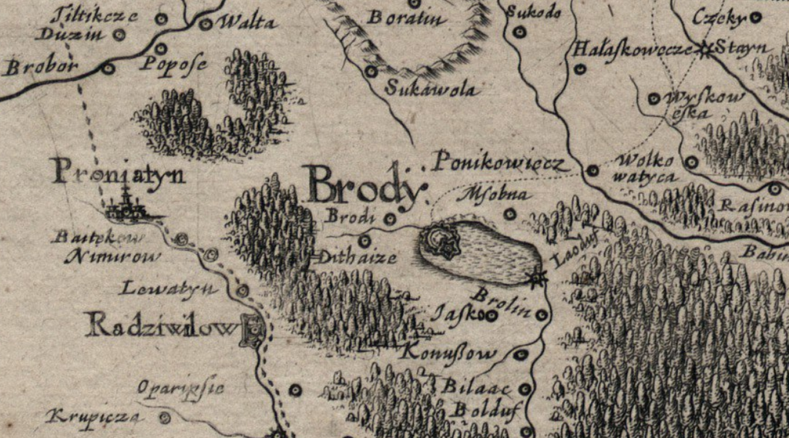
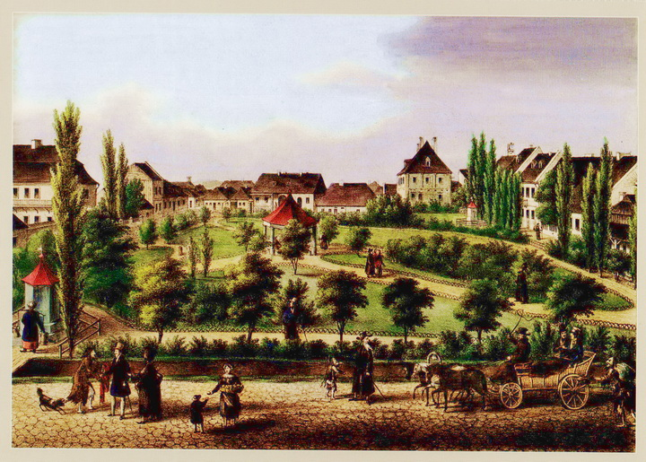

Бро́ди — місто України, розташоване на північному сході Львівської області у Золочівському районі. Свого часу один із найбільших торгових осередків Австро-Угорщини, «вільне місто». Адміністративний центр колишнього Бродівського району, ліквідованого 17 липня 2020 року під час адміністративно-територіальної реформи.
Перші поселення
На південно-східній околиці Старих Бродів — в урочищі Заставки, на північно-східному схилі лівого берега річки Суховілки, під час археологічної розвідки краєзнавця І. Богдана, було виявлено багатошарове поселення та матеріали доби мезоліту, висоцької і вельбарської культур, а також давньоруської доби XII—XIII століть).
На північно-східній околиці Старих Бродів — в урочищі Горби, на південному схилі правого берега річки Суховілки, під час археологічної розвідки краєзнавця І. Богдана, було виявлено багатошарове поселення доби пізнього палеоліту, зокрема, знайдено численні скребки, різці, ножі та інші зразки крем'яних виробів. Беручи до уваги те, що на суміжних територіях були знайдені аналогічні артефакти, то можна припустити, що вони використовувалися як допоміжний інструмент при полюванні на північного оленя, збиральництві та рибальстві і датовані приблизно в межах 10000—7000 років до Різдва Христового. Також тут виявлено поселення висоцької та райковецької культур, Київської Русі (XII—XIII століть).
На східній околиці міста, північно-західніше від так званого «Київського мосту», на невеликому мисі серед заболоченої заплави Дітківецького потоку, під час археологічної розвідки В. Левуса на початку 1980-х років, було виявлено поселення висоцької культури та Київської Русі XII—XIII століть.
У східній частині міста — в урочищі Бугаї, серед заболоченої місцевості розвідкою краєзнавця Дмитра Чобота, були виявлені залишки давньоруського броду, що був завширшки 6 метрів та завдовжки близько 40 метрів, а також фрагменти керамічного посуду XII—XIII століть.
Під час археологічних досліджень у 2017 році в урочищі Заставки було виявлено поселення кам'яної доби, а також поховання Висоцької культури. Скоріш за все, поблизу було й поселення цієї культури, але його не було виявлено, найімовірніше, що його знищено навколишньою забудовою. Натомість, в урочищі За Коморою, поблизу залізничної колії, виявлено поселення висоцької культури. Розкопки в урочищі На Валах та знахідка срібного римського денарія Марка Аврелія (161—180 років) на присадибних ділянках поблизу північного міського оборонного валу XVII століття, свідчать про те, що вже тоді існували торговельні відносини (зв'язки) між місцевими племенами готів та Римською імперією. Тоді ж само в урочищі Горбки виявлено поселення черняхівської культури. Численні знахідки поселень ранньослов'янських племен II—IV століть дають підставу твердити, що в клині між Заставками та золочівським та підкамінським шляхами існували давні поселення і саме з них починається історія давніх Бродів.
У часи Київської Русі
В період Київської Русі на території Бродів вже існувало поселення, вперше згадане у «Повчанні Володимира Мономаха своїм дітям» (1084). Тут відбулися дві великі зустрічі між київським, на той час чернігівським, князем Володимиром Мономахом та волинським — Ярополком Ізяславичем (1084, 1085). Є підстави твердити, що ця подія відбулась саме на території Старих Бродів, в урочищі «Під Коморою».
Вважається, що у 1241 році Броди були знищені татарськими ордами хана Батия, але безпосередніх доказів (писемних згадок чи археологічних знахідок), котрі підтверджували б цей факт немає.
У часи Литовської держави
Доля поселення Броди тривалий час була пов'язана з Олеським замком. Після смерті короля Русі Юрія II Болеслава у 1340 році, Олеський замок та навколишні землі, до яких належало й поселення Броди, у 1340 році зайняв литовсько-руський князь Любарт-Дмитро. У 1366 році Олеський замок, разом з округою загарбаний польським королем Казимиром Великим та до 1382 року перебував у власності польських та угорських королів, але пізніше відвойований Любартом. У війні, яку розпочав великий литовський князь Свидригайло, брат короля Ягайла, з метою заволодіння Поділлям, тоді Олеський замок відіграв важливу роль у захисті навколишніх земель від експансії Польщі на схід. Останнім захисником замку був Олеський староста Івашко Прислужич з Рогатина, котрий чітко керував обороною твердині від польської навали. Після тривалої облоги замку польськими військами, наприкінці 1432 року, твердиню було здобуто.
У 1432 році Брідщину, як складову частину колишнього Королівства Русі, було прилучено до новоствореного Руського воєводства у Королівстві Польському, а саме поселення Броди відійшло до його Львівської землі.
Королівство Польське
Місто у власності Сененських
У 1441 році польський король Владислав III Варненчик привілеєм надав шляхтичу Іоану Сененському за вірну службу та оборону руських земель від татар у володіння землі так званого «Олеського ключа», у тому числі й село Броди.
По смерті Іоана Сененського у 1477 році населений пункт відійшов до його сина Петра. В нього було дві дочки, які по смерті батька продали частину своїх володінь разом з Бродами дружині воєводи Подільського Мартина Каменецького, що було узаконено добровільною угодою, укладеною у Львові 1511 року. По смерті Мартина Каменецького у 1540 році та його дружини у 1578 року, у права власності на ці володіння вступили троє їхніх синів, а після розподілу земель між братами, Броди дісталися Іоану та Альберту (Войтеку). Брати вели надто розпутне життя і 1580 року через значні борги вимушені були продати частину володінь (у тому числі й Броди) воєводі белзькому Станіславові Жолкевському.
Місто у власності Жолкевських
Новий власник цих володінь, для убезпечення від набігів татар, вирішує між селами Броди та Лагодів на острові (нині — Островчик знаходиться у межах міста), що розташовувався посеред ставу Копень (на думку Дмитра Чобота, цей став міг входити до складу системи ставів, які давніше сприймали як Амадоцьке озеро) спорудити замок. Поряд новий дідич вирішив закласти місто, яке пізніше, як і замок постановив назвати Любичем — за назвою родинного гербу Жолкевських; будувати костел святого Станіслава. Нова назва населеного пункту швидко поширилося на все поселення, знане колись, як Броди, а поселення, що існувало до спорудження замку — стали Старими Бродами.
22 серпня 1584 року Любич отримав німецьке або магдебурзьке право й статус міста за привілеєм польського короля Стефана Баторія, виданого в Любліні. Цей привілей також надавав місту право тричі на рік проводити міські ярмарки, а також ним передбачалося проведення торгів двічі на тиждень — у п'ятницю та неділю. Місто звільнялося від сплати «мостового» та «гребельного» зборів, але залишився митний збір на користь короля та держави.
1586 року мешканці міста отримали від дідича Станіслава Жолкевського право будуватися біля замку, користуватися «…після потреби з панських наділів: сіножатей, ріль, дібров тощо». Місто знаходилося на перетині торгових шляхів. Упродовж 1590—1660-х років його відвідали представники понад сотні населених пунктів як з коронних, так і литовських воєводств Речі Посполитої, а також із земель, що перебували під контролем Османської імперії.
З-поміж кількох національних громад міста, лише єврейська змогла успішно розвиватися та збільшуватися, настільки, щоби на довгі літа істотно впливати на економічний, культурний та освітній розвиток міста, і завдяки цьому за містом закріпилася назва «Галицького Єрусалиму».
Містом керувала міська рада, один із райців призначався С. Жолкевським, інші — обиралися населенням міста. По смерті Станіслава Жолкевського у 1588 році Любич разом з навколишніми селами перейшло у спадок його сину Миколаю, який засновує католицьку парафію у межах власних володінь та поширює її вплив на населення міста. По смерті Миколая у 1597 році, маєтками Жолкевських управляє його вдова Анна, що залишилася з чотирма дітьми. На їхнє прохання польський король Сигізмунд III Ваза на Варшавському Соймі 20 березня 1597 року підтвердив привілей даний Любечу Стефаном Баторієм.
Нова назва міста не закріпилась, оскільки за нетривалий період часу її витіснила популярна назва сусіднього села — Броди. Про це згадується в записках Анни Жолкевської «до костела Бродського», датованих 20 грудня 1598 року.
Місто у власності Конєцпольських
У 1614 році, один з синів Анни — дідич Лукаш Жолкевський видав привілей, яким розширив права міщан. 1629 року місто змінило власника і ним став воєвода сандомирський Станіслав Конєцпольський, який отримав місто частково задарма, частково — придбав за 500000 злотих разом з іншими поселеннями від Л. Жолкевського, який не мав нащадків. Новий власник міста 8 квітня 1629 року видав привілей, яким підтвердив попередні права і свободи міщан, але й трохи їх розширивши. Зокрема, зменшив кількість поборів на користь власника міста, населення звільнялося від десятини. Для поповнення міської скарбниці встановлювалися ярмарки на свята святого Юра та на святу П'ятницю.
Через брак місцевих пасовищ С. Конєцпольський дозволив міщанам користуватися його власними пасовищами. Його стараннями започатковано виготовлення шовкових тканин та споруджено підприємство з виготовлення селітри, а також завдяки великим плантаціям винограду міщани мали вино, як для власного споживання, так і на продаж.
Власник Бродів вирішив власним коштом укріпити місто. Так, за сприяння дідича король Владислав IV Ваза 11 березня 1633 року подає на королівський сойм у Кракові привілей для Бродів, яким надав місту німецьке (магдебурзьке) право у тому обсязі, у якому його мали тогочасні великі польські міста. Міська дума мала право власною печаткою засвідчувати судові рішення. Місцеві цехи у своїх правах і свободах прирівнювалися до аналогічних львівських, люблінських та краківських, а бродівські ярмарки — з люблінськими та торунськими. Торговельний шлях з Волині, Полісся, Київщини до Польщі мав прямувати через Броди, де торговці зі своїми товарами мали перебувати три доби, тобто місто отримало так зване «право складу», котрим дозволялося також проводити дрібногуртову торгівлю цими товарами. Місцеві торговці пожиттєво звільнялися від сплати мостового і гребельного мит (на пограничне мито цей дозвіл не розповсюджувався) та на 15 років від збору у міську скарбницю Бродів.
Стараннями Великого гетьмана коронного С. Конєцпольського 31 травня 1637 року у місті був відкритий навчальний заклад «Академія Бродська», у якій викладали професори краківського університету. Для пожвавлення торгівлі запросив до міста купців-шотландців, вірменів, греків. Сприяв укріпленню міста валом, муром, частоколом; перетворенню міських укріплень на потужну цитадель, збудовану за зразками нового на той час голландського фортифікаційного мистецтва. У її проектуванні ймовірно брали участь Ґійом де Боплан та Андреа дель Аква (автори відомого замку в сусідніх Підгірцях). Майбутній Гетьман Богдан Хмельницький від 1633 року перебував на службі у великого коронного гетьмана С. Конєцпольського, отримав помешкання в Бродах. Під час оглядин новозбудованого бродівського замку у 1633 році, на які була запрошена місцева шляхта, Хмельницький необачно висловився щодо фортеці, що «…гарний замок, але збудований людськими руками, ними ж може бути і здобутий», розгнівивши цим С. Конєцпольського.
Броди були збудовані як ідеальне місто-фортеця, де всі вулиці паралельно-перпендикулярні. Для розбудови міста власники запрошували сюди купців різних національностей: у XVII столітті в Бродах, крім українців та поляків, мешкали також євреї, вірмени, греки та шотландці, про що свідчать записи в актових книгах.
Брідська твердиня постала в західній околиці міста, з протилежного боку її захищали болота й ставки та була яскравим прикладом оборонної споруди раннього бароко. У плані це був п'ятикутник, оточений глибоким земляним ровом. Укріплення складались з 5 бастіонів та куртин з казематами всередині валів, виконаними з цегли та каміння (загалом було 75 казематів). Бастіони простотою своєї будови нагадували аналогічні споруди вже згаданого Підгорецького замку.
В'їзд до замкової брами з боку міста здійснювався через підйомний міст. Фасади казарм з боку дитинця були старанно виконані з каменю. Ритм подвійних пілястр і аркад між ними, вписані в них вікна й оздоблені рустикою портали нагадували італійські зразки. Приміщення в казармах, під хрестовими склепіннями (збереглись до нашого часу) мали анфіладне сполучення (в шестигранних бастіонах склепіння були пальмові). Комендант фортеці мешкав у дерев'яному будинку на території замку.
 Броди та околиці (фрагмент Генеральної мапи України Гійома де Боплана, 1648 рік)Відчуваючи наближення своєї смерті, Станіслав Конєцпольський у присутності католицького священика 11 березня 1646 року склав заповіт, за яким зобов'язав свого сина Олександра спорудити у місті католицький костел, у якому мали бути поховані тлінні рештки представників родини коронного гетьмана. На відправу Служби Божої за душі померлих, його вдова Зофія Людвіка з Опалінських заповіла 1000 червінців золотих. Того ж дня С. Конєцпольський відійшов у вічність, а церемонія поховання відбулася 30 квітня та пройшла з великою помпезністю.
Олександр Конєцпольський був людиною відважною, запальною та жорстокою. Свою жорстокість проявляв до українського народу та козаків, зокрема, після придушення виступів заколотників бунту наказував четвертувати, вішати, садити на палю, а також за непослух все поселення перетворити на попіл. Під час Хмельниччини О. Конєцпольський придушив виступ українського населення у Костянтинові. Через ці події Богдан Хмельницький скеровує на Дубно й околиці селянсько-козацькі загони під орудою козацьких полковників Данила Нечая, Мартина Небаби та Ступи, що поверталися після битви під Пилявцями, а селянсько-козацькі війська на чолі з Богданом Хмельницьким з-під Збаражу направляються під Броди. Місто-фортецю було узято в облогу, що тривала близько 8 тижнів. Під час штурму місто зазнало значних руйнувань, натомість замок вцілів з незначними ушкодженнями, а козакам Хмельницького віддали полонених татар. Міщани Бродів в основному не підтримали вояків Хмельницького.
У 1651 році, довідавшись про приїзд дідича до міста, вирішили влаштувати урочисту зустріч. Але, оскільки міська скарбниця була порожньою та ще й мала борги, міські райці звернулись до «панів елєктів», щоб порадитись, звідки взяти кошти. Ті визнали, що найважливішим є видаток щодо приїзду пана, та постановили стягнути з міщан шос — надзвичайний податок. Для схожої зустрічі пана у 1663 році (сподівалися на повернення Станіслава Яна Конецпольського з-за кордону) заставили кам'яниці купців-шотландців: дім, який раніше був власністю Александра Рейди за 60 злотих, також мешкання Сімсона, який вже був відсутній у місті.
Вибори війта, його заступника, лавників (присяжних), райців (консулів) у першій половині XVII століття відбувались в місті, зокрема, у XVII столітті о дев'ятій ранку наступного дня після католицького свята Трьох Королів та служби в костелі за участі всієї громади. Як правило, у приміщенні ратуші, у випадку зайнятої ратуші — деінде, наприклад, у приміщенні плебанії. Завжди проходили за присутності дідичного урядника — старости чи бургграфа. Наприкінці XVII століття вибори лавників належали лише райцям, війту.
Як в інших тодішніх галицьких містах, реальну владу в місті мали підстароста, міщани, які мали «зв'язки» з двірськими підданими дідича. Зокрема, 1642 року колишній бургграф Бродівського замку Пйотр Коцельський мав конфлікт з війтом Марціном Пленардовичем. Останній вніс «протестацію» (позов) дідичу, який доручив розібратись у конфлікті підстарості Млоховському. Коцельський вважав такий порядок нелегальним, посилаючись на привілеї міщан, плебісцити, магдебурзьке право тощо. Підстароста відповів, взявшись за бік, щоб витягнути шаблю: У мене право в голові… Мовчи, с…й сину, хлопе….
Наприкінці березня 1659 року у Підгірцях раптово помирає Олександр Конєцпольський, звідки його тіло було перевезене та поховане у Бродах.
Його син Станіслав Ян Конєцпольський, виконав заповіт свого діда та спорудив у Бродах камінний костел, де з часом перепоховав тлінні рештки свого батька, матері та інших родичів. 31 жовтня 1669 року у Кракові були підтверджені усі права та привілеї міста, а за два тижні, 14 листопада 1669 року було отримано привілей для брідського столярного цеху. Він суттєво зміцнив міські фортечні укріплення, чим у значній мірі захистив мешканців навколишніх сіл від нападів турецько-татарських загонів.
1676 року в місті оселилася велика вірменська громада та ченці з підкаміньського домініканського монастиря, рятуючись від нападів турецько-татарських загонів. С. Конецпольський маючи у планах залишення ченців у Бродах, 3 березня 1678 року жертвує місце під забудову майбутнього костелу Святого Станіслава та 30 000 червоних злотих.
Місто у власності Собеських
Не маючи нащадків краківський каштелян Станіслав Ян Конецпольський 22 серпня 1682 року складає заповіт, за яким Броди з навколишніми селами переходять у власність, тобто дарує свої маєтності сину короля Яна III Собеського — молодому королевичу Якубу Людвіку Собеському. З цим був незгодний його дядько Ян Олександр Конецпольський, який двічі нападав на Броди та оволодівав замком. Любельський трибунал вироками 1700 та 1714 років наказав йому покинути замок та відшкодувати нанесені ним збитки, а також його було засуджено на вигнання. За часи володіння Собєськими містом відомо, що 1690 року Броди прийняли вигнаних з Молдови єпископів Баковських.
1696 року помирає король Ян III Собеський і вже по його смерті турецько-татарські загони спустошили Волинь та пограбували Броди, при цьому не зустрівши сильного супротиву з боку місцевого населення. Пізніше через пожежу вигоріла значна частина міста, у тому числі й костел з дзвіницею. Костел було відновлено 1699 року, а 4 червня того ж року королевич Якуб Собеський видав грамоту, якою надавалися певні привілеї місцевим євреям, зокрема за ними закріплювалася уся промисловість, торгівля, власне самоуправління, а також вони звільнялися від частини різних зборів та податків до місцевої скарбниці.
Місто у власності Потоцьких
4 вересня 1703 року королевич Якуб Собєський за борги передав місто та брідський замок у власність графа Гаврила Виховського, а той вже 8 січня 1704 року продав цю маєтність маршалові трибуналу коронного і київському воєводі Юзефу Потоцькому. 8 травня 1704 року Юзеф Потоцький, як новий власник Бродів, урочисто в'їхав до міста.
У 1709 році, під час Північної війни, місто було окуповане російською армією. Під час короткого перебування російські вояки спричинили великої шкоди місцевому населенню. Так, 1711 року скориставшись відсутністю власника міста Юзефа Потоцького (перебував при таборі Карла XII в Османській імперії), під час ярмарку на Броди напали російські загони очолювані Голинським і Оранським та зайняли місто разом з замком. По поверненню Потоцького з Північної війни до Бродів, місто було відвойоване польським військом.
1715 року місто вигоріло майже вщент через велику пожежу. Це пояснюється тим, що у ті часи для освітлення осель використовували відкритий вогонь, а самі хати будували з дерева та вкривали різного роду ґонтами або ж соломою, що відповідно мало велику пожежну небезпеку. Не рятувало від вогню й те, що деякі будівлі у місті були мурованими, оскільки основна частина конструкцій залишалася дерев'яною.
У 1734 році Броди опинилися в епіцентрі військових дій, а саме було зайняте гайдамацькою армією Верлана під час одного із перших гайдамацьких повстань. На придушення цього повстання були підняті усі можливі військові сили Речі Посполитої, але вони виявилися недостатніми. Тоді польський уряд звернувся за допомогою до Російської Імперії і вже 1734 року поляки та росіяни розпочали спільні військові дії проти повстанців. У липні того ж року місто та Бродівська фортеця були черговий раз захоплені російським військом, на цей раз військовими підрозділами російської армії під командуванням принца Людвига Вільгельма Гессен-Гомбурзького, практично без опору.
До 1742 року міське життя стабілізувалося, почалася відбудова міста після воєнних дій попередніх років, пожвавилася торгівля. Але знов необережне поводження з відкритим вогнем призвело до наступної великої пожежі у місті, що трапилася під час ярмарку на святого Юрія (6 травня 1742 року). Тоді вигоріла значна частина міста. Через те, що у Бродах були величезні склади товарів, значних збитків, що обчислювалися мільйонами золотих, зазнали місцеві та іноземні підприємці. У цій пожежі загинуло багато людей, а через збитки спричинені пожежею покинули Броди вірмени, а їх нішу у сфері торгівлі на довгих три століття зайняли місцеві євреї.
1748 року Броди відвідав посол Великої Османської імперії. У бродівському замку 11 березня 1748 року він мав зустріч з Потоцьким, під час якої відбулися перемовини стосовно звільнення з польського полону двох татарських високопосадовців.
У лютому 1751 року Юзеф Потоцький важко занедужав, а 19 травня того ж року помер у Залозецькому замку та був похований у крипті Станіславівської колегіати. Наступним власником Бродів став єдиний син Юзефа — київський воєвода Станіслав Потоцький, що відзначився багатьма благодійними справами, зокрема, виділяв кошти на спорудження храмів та заснування монастирів. Також коштом нового власника Бродів у середині XVIII століття була перебудована бродівська фортеця на пізньобарокову резиденцію. Тоді біля північної куртини споруджено величний палац, а з боку міста — гарна брама з годинником. 1755 року в палаці відбулося весілля дочки Станіслава Потоцького — Теофілії з коронним стольником Фридеріком Мощинським. На той час місто адміністративно належало до Волинського воєводства. Станіслав Потоцький помер 8 лютого 1760 року у Залізцях, звідки його тіло було перевезено до костелу оо. Бернардинів у Збаражі, де й відбулось його урочисте поховання. Того ж року в Бродах найімовірніше вдовою Потоцького — Геленою Замойською був заснований монастир Дочок Милосердя, що знаходився поблизу дерев'яного костелу святого Станіслава. У 1763 році тут під час «октави» свята Божого Тіла сталася велика пожежа, під час якої згоріла більша частина міста. І від того часу для спорудження будинків міщани почали більше використовувати камінь на заміну дерева, щоби таким чином убезпечити власне життя та майно на випадок пожежі.
20 вересня 1770 року сини Станіслава Потоцького — Юзеф, Пйотр, Францішек Ксаверій та Вінцентій Потоцькі зустрілися у Варшаві з метою розподілу маєтків, що залишилися по смерті їхнього батька. Таким чином, Броди з навколишніми землями отримав у свою власність Вінцентій Потоцький.
Австрійська монархія
У січні 1771 році розпочалися переговори Росії, Пруссії та Австрії щодо поділу Речі Посполитої. 5 серпня 1772 року вони завершилися в Санкт-Петербурзі підписанням австрійсько-прусського, австрійсько-російського й пруссько-російського договорів, за якими під владу Габсбургів відійшло Руське воєводство, у складі якого тоді перебували Броди. Таким чином місто на наступних півтора століття опинилося на кордоні Габсбурзької монархії та Російської імперії, у складі створеного на території колишнього Руського воєводства — королівства Галичини та Володимирії. У 1774 році імператор Священної Римської імперії Йосиф II в рамках своєї подорожі по нових регіонах імперії відвідав Броди. Єврейська громада міста на чолі з рабином Лейбою Берштайном влаштувала пишний прийом величному гостю, який поспілкувавшись з представниками місцевого кагалу сказав відому фразу:
"Тепер я знаю, чому мене називають імператором Єрусалиму"
1779 року місту наданий «статус вільного торгового міста» за зразком портових міст імперії, зокрема Трієсту, тобто усі товари, що перебувають транзитом на території міста звільнялися від сплати мита. Цим привілеєм передбачалося також прокладання поштового тракту з Бродів до Києва, а 1786 року було зроблено декілька доповнень до цього ж документу, зокрема, наступного, 1787 року було об'єднано вексельний та торговельний суди з міською управою (маґістратом). Того ж року в приміщенні міської управи було відкрито школу для дівчат при ордені Дочок Милосердя. У 1788 року проведено розмежування володінь міста та навколишніх поселень, окружний суд перенесено до Золочева, римо-католицький прихід відділено від Луцької єпархії та приєднано до Львівської єпархії.
Під час великої пожежі 1801 року у місті згоріло близько 650 будинків, зокрема, й монастир Дочок Милосердя та мала синагога. Після чого шаритки виїхали до Залізців. Наступного року Броди відвідав брат російського імператора Олександра І — цісаревич і великий князь Костянтин Павлович.
1805 року Росія вступила в війну з французьким імператором Наполеоном І Бонапартом на боці антифранцузької коаліції, куди входили також Австрія та Англія. Згідно з планом союзного командування російська Подільська армія під командуванням генерала-фельдмаршала Михайла Кутузова повинна була перейти кордон Австрії неподалік Бродів. 13 серпня того ж року перша колона російських військ під командуванням російського генерала Петра Багратіона зробила зупинку в Бродах, на шляху до Моравії.
5-6 липня 1809 року австрійська армія під командуванням ерцгерцоґа Карла у битві під Ваграмом зазнала відчутної поразки від французів, тим самим припинивши існування п'ятої коаліції. Через це Габсбурґська монрхія була змушена підписати з Францією так званий Шенбруннський мирний договір. Одна з умов договору закріплювала за Варшавським герцогством, створеним Наполеоном І Бонапартом, частину території Галичини, у тому числі й північну Бродівщину, зайняту польськими військами на чолі з князем Юзефом Понятовським. Броди на три роки стали центром новоутвореної домінії, адміністрація якої перебувала у Бродівському замку. Завдяки брідському купцеві Ізраїлеві Бернштайну, 1809 року було встановлено поштовий зв'язок між Бродами та Львовом. Спочатку поштовий диліжанс курсував тричі на тиждень, а від 1825 року — п'ять разів.
Після відступу військ у 1812 році, за наказом австрійського уряду, дідич Бродів люблинський староста Вінцентій Потоцький керував розбиранням фортифікацій з боку міста. Було підірвано в'їзну (надбрамну) вежу, розібрано два бастіони і равелін та їхніми румовищами засипано оборонні рови. Залишилися лише житлові будівлі та півколо валів з казематами, що пізніше використовувалися як складські приміщення та магазини. 1815 року єврейська громада Бродів ініціювала та частково спонсорувала відкриття у місті реальної школи з німецькою мовою навчання та додатковим вивченням французької, італійської та латинської мов. У 1817 році виникла чергова пожежа, що знищила 18 будинків.
Новий ринок у Бродах (літографія Карела Ауера, 1830)
Близько 1833 року власником табулярної маєтності Броди став Ян Казімеж Молодецький. 29 квітня 1835 року в Бродах вчергове сталася пожежа, що розпочалася з південного боку і вітром полум'я поширювалося у західному напрямку. Внаслідок стихії тоді згоріло 154 будинки, а без житла залишилося близько 400 брідщан. У 1836 році Броди відвідав Львівський латинський архієпископ, Примас Галичини і Володимирії Франтішек де Паула Піштек, а 1842 року — імператор Австрії Фердинанд.
Станом на 1848 рік Броди були другим містом у Галичині після Львова за площею та чисельністю населення. Тут була резиденція повітового старости, податкова та прикордонна служби, торгово-промислова палата (заснована 1850 року), російське (працювало до 1895 року) та пруське консульства, комісаріат поліції, повітовий суд, пошта, телеграф. 1850 році знов сталася пожежа про наслідки якої інформація відсутня. 1856 року у Бродах відкрито телеграфну станцію, котра згодом стала третьою в Галичині, після Львова та Кракова, за обсягом інформації, яку передавали.
5 травня 1859 року відбулася наймасштабніша пожежа в історії Бродів. В одному з невеличких будинків передмістя виникла пожежа, вогонь якої, роздмуханий сильним вітром, став досить швидко поширюватися у бік центру міста. Тоді, за даними комісаріату поліції, загинуло 16 осіб, згоріло більше 950 будівель (у тому числі, повітовий уряд і суд, пошта, комісаріат поліції, казарми жандармерії, телеграфічний та податковий уряди, нещодавно відкрита реальна та жіноча школи, новий шпиталь, міські бараки, костел з плебанією, єврейська божниця та багато інших), а також 694 одиниці житлової забудови міста. Того злощасного 1859 року у Бродах спалахнуло ще дві пожежі: 18 липня вибухнула пожежа у міській броварні, полум'я охопило кілька будинків, а у ніч на 16 листопада у Бродах згоріло 11 будинків. 1867 року спалахнула ще одна пожежа. Після двох останніх місто довго не могло оговтатись.
1864 року заснований великий пивоварний завод братів Капелюшів.
Прокладання у 1867—1868 роках залізничної колії Львів-Броди, спорудження залізничного двірця та розбудова ряду промислових об'єктів у південній частині міста наприкінці XIX—початку XX століття дала відчутний поштовх у розвитку міста. У двоповерховій споруді вокзалу з критим пероном, у якій до початку першої світової війни містилися офіси цісарсько-королівських чиновників (адміністрація залізниці, митний, поштовий і телеграфічний уряди, представництво комісаріату поліції). Під час першої світової війни будівля вокзалу зазнала значних руйнувань, але у міжвоєнний період було проведено масштабну реконструкцію вокзалу. Наприкінці 1920-х років у приміщенні вокзалу містилася залізнична книгарня «Рух», телефонний пункт тощо. У вересні 1939 року та червні 1941 року вокзал був бомбардований німецькою авіацією, а під час бойових дій у березні-липні 1944 року споруда старого бродівського вокзалу була остаточно знищена. Вже по війні, 1954 року будівлю вокзалу було відбудовано на старому місці і у такому вигляді вона дійшла до наших днів. У 1872 року, з російського боку кордону добудована залізнична лінія Здолбунів — Радивилів, яку було згодом сполучено з Бродами.
1876 році в місті заснована бродівська філія товариства для розвитку науки, звичаїв, ощадності під назвою Михайла Качковського москвофільського спрямування, яке було юридично затверджене державним намісництвом у Львові 22 липня 1877 року. Метою діяльності організації було визначено «поширення знань, науки та громадської свідомості руського населення Австрії».
З часом економічна ситуація у місті почала стрімко погіршуватися і результатом цього стала у 1880 році втрата Бродами статусу вільного міста. Зростаюче безробіття призвело до масової еміграції брідщан до країн Західної Європи та Північної Америки. Натомість ситуацію загострило масове прибуття євреїв-емігрантів з Російської імперії, які втікали від погромів 1881—1882 років. Через переповненість транзитного табору, що знаходився тоді в межах колишньої текстильної фабрики, у місті відчулася велика нестача харчів або ж надто велика їх вартість, а також місто потерпало від епідемій різних хвороб.
10 травня 1881 року відбулося урочисте закладення наріжного каменю під нову будівлю гімназії і вже 4 вересня 1883 року там розпочалося навчання. Гімназія була названа на честь нащадка австро-угорського престолу кронпринца Рудольфа.
1 березня 1891 року в Бродах за сприяння представників місцевої української інтелігенції на чолі з греко-католицьким катехитом бродівської гімназії о. Григорієм Яремою відкрили філію товариства «Просвіта». Того ж дня був прийнятий «Статут товариства філія „Просвіти“ в Бродах», під яким підписалися: греко-католицький катехит брідської гімназії о. Г. Ярема, гімназійний вчитель Петро Скобельський, професор гімназії А. Чичкевич, судовий ад'юнкт В. Лукавецький, парох села Білявців о. Ю. Мандичевський та інші. І лише 9 серпня 1891 року філія офіційно була затверджена державним намісництвом у Львові.
2 січня 1897 року Бернард Шаррер на вулиці Золотій відкрив перше в місті газетне бюро, де можна було здійснити передплату на дозволені, на той час, у Австро-Угорщині крайові й іноземні часописи.
У березні 1897 року в одному з будинків при вулиці Коженьовського (нині — вул. Стуса) розташувався бродівський осередок товариства «Руська Бесіда», до складу якого увійшли 33 представники руської (української) інтелігенції міста та Бродівського повіту.
21 травня 1900 року за ініціативи керівництва брідського осередку «Просвіти» та низки українських товариств вперше на Бродівщині було проведене Шевченківське свято.
31 жовтня 1902 року ініціативною групою української інтелігенції Брідщини на чолі з очільником бродівської «Просвіти», професором місцевої гімназії Василем Щуратом було засноване товариство «Русько-українська повітова бурса». Товариство опікувалося українською шкільною молоддю, а також його коштом було споруджено приміщення бродівської повітової бурси, де нині міститься Бродівська спеціалізована загальноосвітня школа І—III ступенів № 2 з поглибленим вивченням англійської мови.
У 1910—1913 роках за проєктом архітектора Гіполіта Слівінського на сучасній вул. Коцюбинського споруджено будівлю бродівського повітового суду. На початку травня 1914 «Kurjer Lwowski» опублікував замітку про початок робіт зі спорудження фундаменту місцевої філії Австро-Угорського банку, що спричинило конфлікт між бродівськими робітниками і селянами, яких спочатку запросив на роботу місцевий «геометра».
Інтенсивна розробка лісових ресурсів Галичини викликала пожвавлення в будівництві мереж вузькоколійок (ширина колії 750—760 мм), прокладення котрих супроводжувалося створенням стаціонарних інженерних (мости, переправи, естакади тощо), житлових та господарських споруд. Система вузькоколійних залізниць була тісно інтегрована в загальну систему залізничного транспорту. Протягом 1912—1913 років для лісовозів було споруджено 39-кілометрову вузькоколійну залізницю Броди — Шнирів, що складалася з двох гілок — Шнирівської і Берлинської та використовувалася для вивезення деревини з лісових господарств північно-західної Бродівщини. Під час бойових дій першої світової війни російські й австрійські вояки влітку 1915 року розібрали 31 км колії.